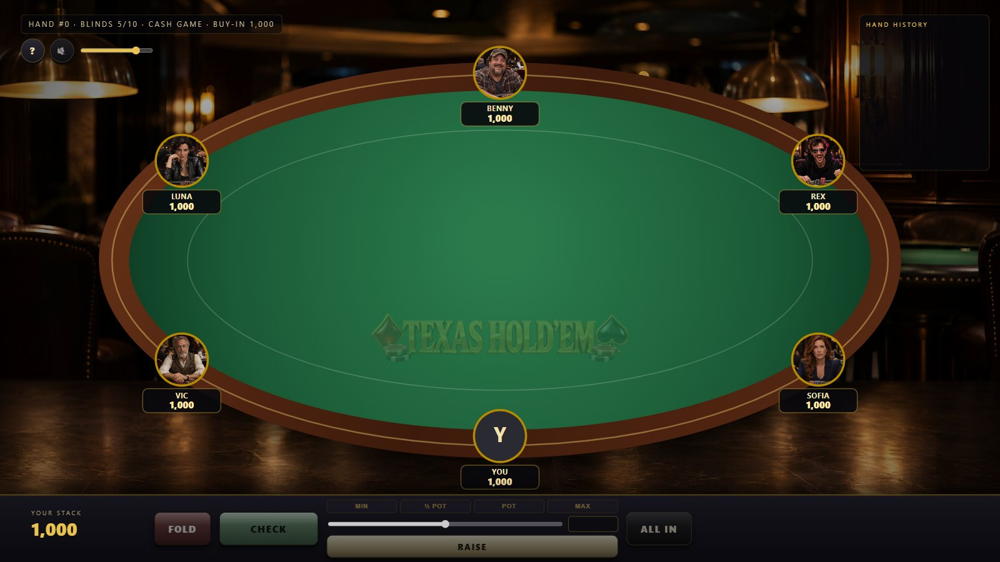
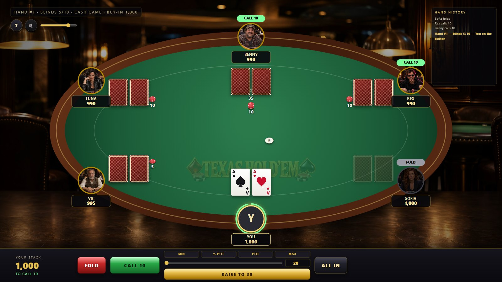
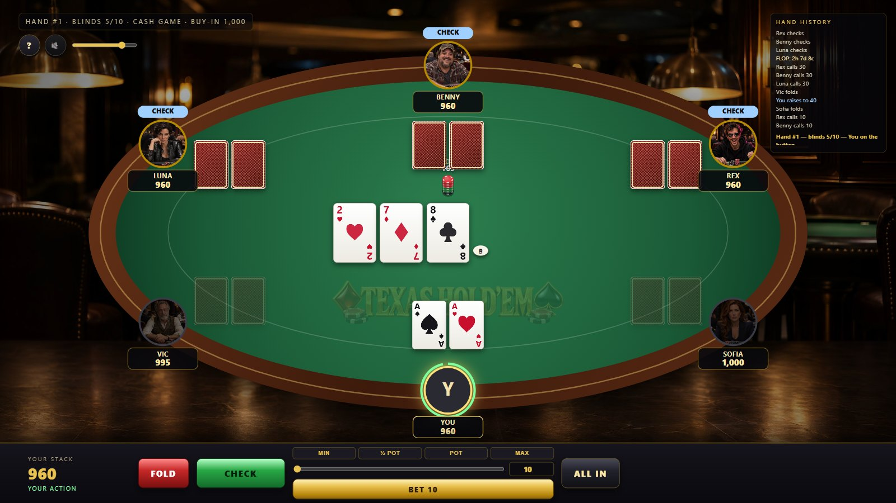
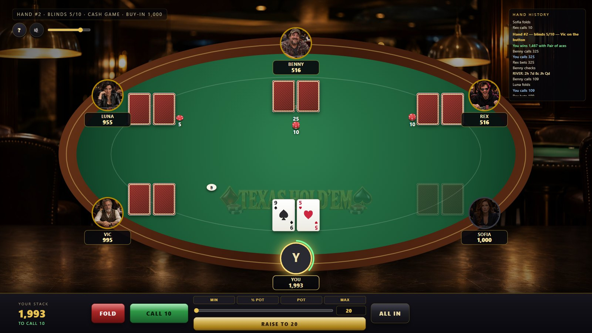
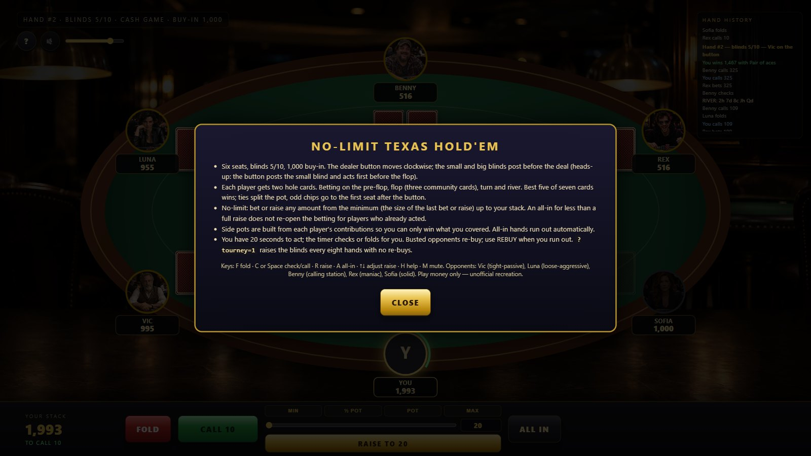

What it is
No-Limit Texas Hold'em at a six-handed table against Vic, Luna, Benny, Rex and Sofia — five opponents with different temperaments who decide from Monte-Carlo equity, pot odds and position. Plain HTML5 Canvas and Web Audio, no frameworks, no build step. The rules engine is unit-tested: hand evaluation across 4,000 random seven-card hands, min-raise and short-all-in rules, side pots with three different stacks, heads-up blinds, splits with odd chips.
Features
Correct rules
Blinds and button rotation (heads-up included), four betting rounds, minimum raises, all-ins that do not re-open action, side pots built from contributions, run-outs, showdown with the best five of seven and tie splitting.
Five personalities
Tight-passive, loose-aggressive, calling station, maniac and solid. Each estimates equity against the live field, weighs pot odds and position, bluffs at its own rate and sizes bets in its own style.
Physical table
Cards fly from the shoe and flip at showdown, chips fly to the bet spots, sweep to the pot and out to the winner, the dealer button walks, the winning five cards light up with the hand named.
Your controls
Fold, check/call, bet or raise with slider and presets (min, half pot, pot, max), all-in, a 20-second action timer, re-buy, hand-history feed, keyboard shortcuts, optional tournament blinds.
Sound
Synthesized card deals and flips, chip clinks and slides, check knocks, an all-in sting, win chimes, turn alerts and a generated dealer voice for the streets.
Verified
node tools/eval-test.js, tools/equity-check.js, tools/engine-test.js and a headless Chrome smoke test that plays full hands.
Screenshots






Controls
| Action | Button | Key |
|---|---|---|
| Fold | FOLD | F |
| Check / call | CHECK or CALL | C or Space |
| Bet / raise to the slider amount | RAISE | R; ↑ ↓ adjust |
| All in | ALL IN | A |
| Help / mute | ? / speaker | H / M |
Run it yourself
Open index.html or serve the folder (python -m http.server 8768, or start.cmd on Windows). ?tourney=1 raises the blinds every eight hands with no re-buys. See the README for the test tools.